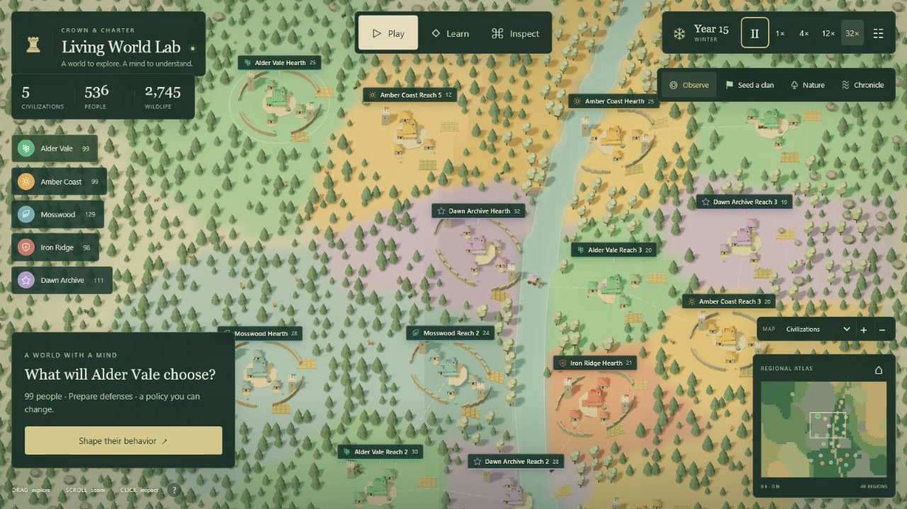

Crown & Charter A living-world learning lab
Explore a civilization. Change a real weight. Watch a different future unfold.

Recorded gameplay
The idea
Food, forests,people, neighbors
16 local signalsdescribe a need
Real weightsshape the scores
One focus sampledfrom eight choices
Here, you edit a small policy and inspect its effects.
Notice a need.
Edit one value.
Test two futures.
Ask why.
Read the math.
Try it · the real policy engine
Open full-page labLoading the policy and its starting world…
Test it · the real simulation engine
Open full-page labPreparing two copies of the same starting world…
Inside the mind
32inputs
16 state · 8 action8 reserved zeros
38hidden units
Weights combine signals.ReLU activates.
1score per candidate
Eight action scores.Softmax probabilities.
Optional native Laya
Selects one option; a patch changes at most two W2 values.
Laya’s own checkpoint stays fixed. No gradient training runs during play.
How to read the result
What you can observe
What to keep in mind
Fixed observations isolate how an edit changes choice probabilities.
A higher chance guarantees neither the next choice nor a better outcome.
Two branches begin with the same world and the same random state.
Choices can change later random draws. Repeat across states and seeds.
Terrain streams as you explore. Societies and ecology change over time.
Stored regions and societies are capped. Population and wildlife are aggregates.
Keep exploring
Begin with a prediction. Change one value. Compare, reflect, and try again.
Open Crown & CharterPlay → Learn → Inspect
Implemented: manual auxiliary-weight edits.Future: specification-to-weight synthesis.